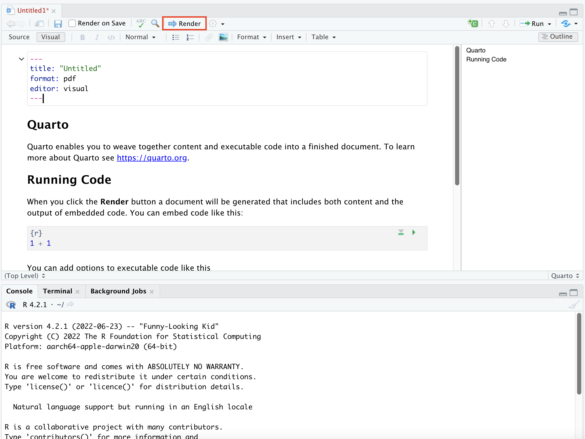

Install and Setup R
If you have used R or RStudio before, please uninstall both R and RStudio and follow the guide below to install the latest versions. Otherwise, Quarto may not work properly on older versions.
If you switch to a new laptop later on, please come back to this tutorial and reinstall R and RStudio following the same procedures.
1 Installation of R
1.1 For Windows computers
Go to R’s official website in this link
Click
CRANunder download section

- These are different mirrors for R download. Basically they store the same installation files but on different servers in different places. Simply click into any mirror.

- Click into
download R for Windowsfor installation files for Windows computers

- Download and install (1)
baseand (2)Rtools. It’s recommended to use the default options during the installations.- Notes: The former is the R program, and the latter is the tool to compile R packages.
- It’s highly recommended to change your system language to English before proceeding, or there could be weird bugs later on.

- Click into this link. Download and instsall Quarto CLI plugin.

1.2 For Mac computers
Go to R’s official website in this link
Click CRAN under download section
- These are different mirrors for R download. Basically they store the same installation files but on different servers in different places. Simply click into any mirror.
- Click into
download R for macOSfor the download file
- Download the correct pkg file to install R
- if you use Intel based CPU, download the
R-4.2.1.pkg - if you use Apple’s silicon chip such as M1, M1 pro, or M2, download the
R-4.2.1-arm64.pkg - refer to this link if you don’t know how to check Intel or Apple CPU
- if you use Intel based CPU, download the

Install
Command Line Toolsfollowing the steps below. This is essential for R to be able to compile packages so do not skip this step.- Open
terminalapp on your mac (the icon is in the screenshot)

- Type the following code
xcode-select --installinto terminal and hitenterto run the code. Admin passwords may be required to proceed. The code may run for a few minutes. This step is to install MacOS tools that can help compile R packages.- If your terminal says “xcode-select: error: command line tools are already installed, use”Software Update” to install updates”. It means the needed tool is already installed on your computer. Then there is nothing needed in this step.
- Open

2 Install RStudio
RStudio is where we will write our R codes. Please install RStudio following the steps below.
- Go to RStudio’s website here
- Scroll down to the download list, and select the right version that suits your computer (Mac/Windows)
- After downloading the installation file, follow the instructions to finish the installation. Recommended to use the default settings during installation.
- After installation, you can find RStudio in the Application folder on Mac or Windows menu on Windows computers.
3 Install LaTex
LaTex is needed to compile PDF reports from RStudio, please install LaTex on your computers.
4 Check success of installation
4.1 Check R and RStudio are properly installed
Please follow the following steps to make sure you have successfully installed R and RStudio.
- Step 1: Launch RStudio from your computer. Check if you see the following screen without any error messages
Then congrats, you have successfully installed R and RStudio!

- Step 2: As shown in the picture, type
1+1behind the>and hitenter, check if you see a2output
If there are no error messages and you see exactly the same output, then congrats, you have successfully installed R and RStudio!
4.2 Check Quarto is properly installed
- Step 1: Click the green plus sign circled below, and select
Quarto Document

Step 2: Select pdf and click Create.

- Step 3: Click the
Renderbutton. You may be asked to save theqmdfile to a location. Pick any location on your computer. R will then render the qmd document and generate a PDF file, named “untitled.pdf” in the same location.

- Step 4: The PDF file should look like below. If you can generate the PDF file without issues, Quarto has successfully run on your computer!

5 Installation Q&As
5.1 Why do we need to install Rtools and Commandline tools?
Many R packages are written in R. Since R is an interpreted language, source code written in R doesn’t have to be translated into system-specific machine language before running. However, some R packages have significant portions written in compiled languages, such as C/C++ or Fortran. These languages need accessory software tools to translate (“compile”) their source code into machine language that can run on a particular system.
Package developers have two choices when distributing code for compiled languages:
They can prepare compiled, realdy-to-use “binaries” matched against common systems, so that people can simply download the binaries and directly use their packages code without having to know how to compile it.
They can distribute source code (i.e., the raw C++ codes) only, and expect the user to have the right compiler software to build system-specific runnable code themselves.
RtoolsandCommandline toolsare the compliers that do the job, therefore needed as an additional installation step.
On UNIX/Linux, only source code is distributed and all packages are compiled from source during installation (for packages written entirely in R, this is trivial!). For Windows and Mac, CRAN makes pre-compiled binaries available. On Windows, install.packages() will only install precompiled binaries, unless explicitly forced to install from source (you can read a lot more about this in the R Installation and Administration guide).